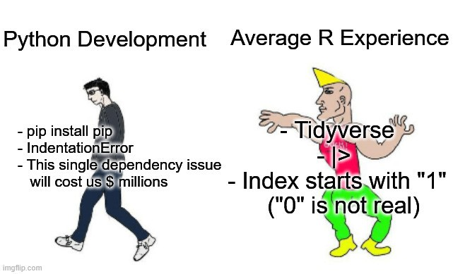
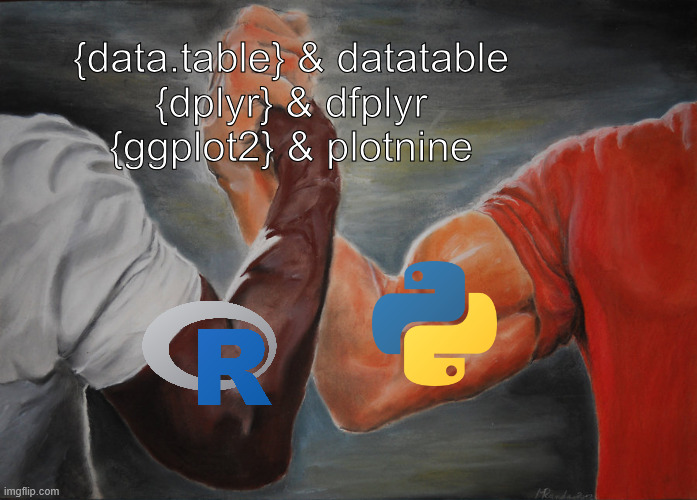
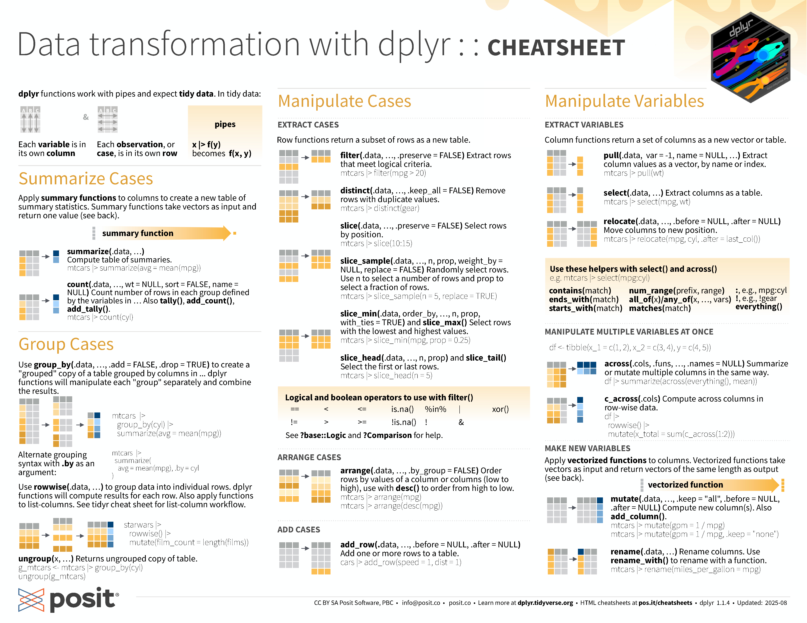
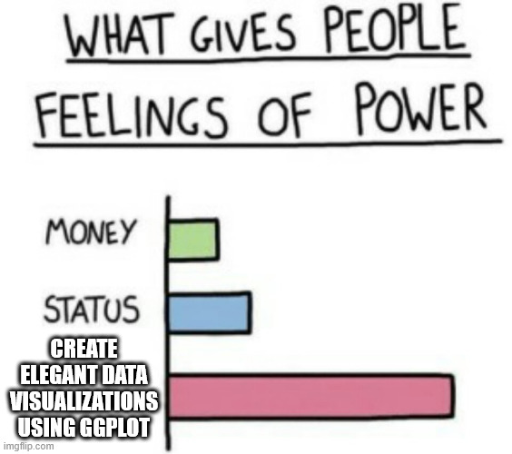
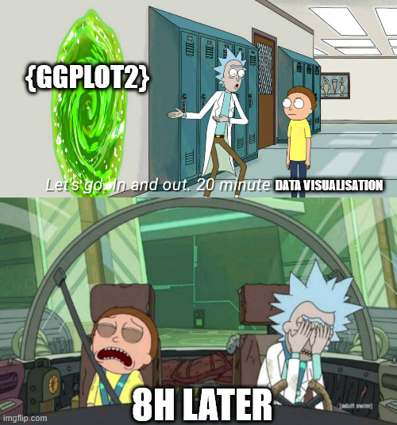
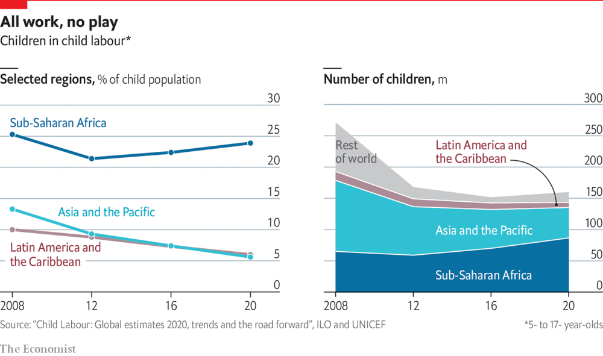
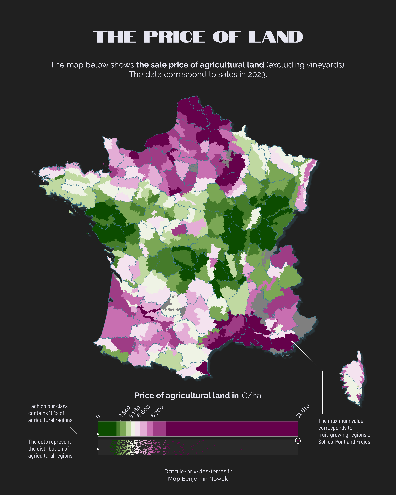
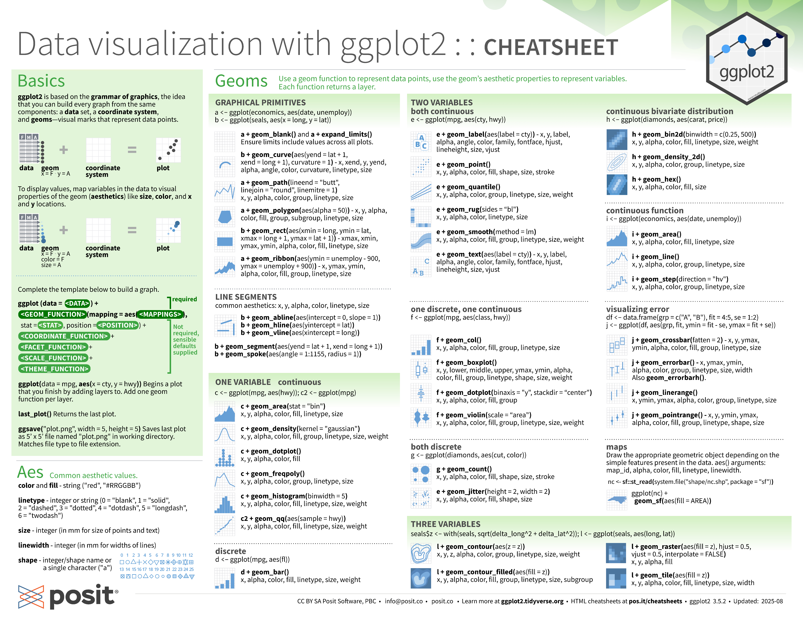
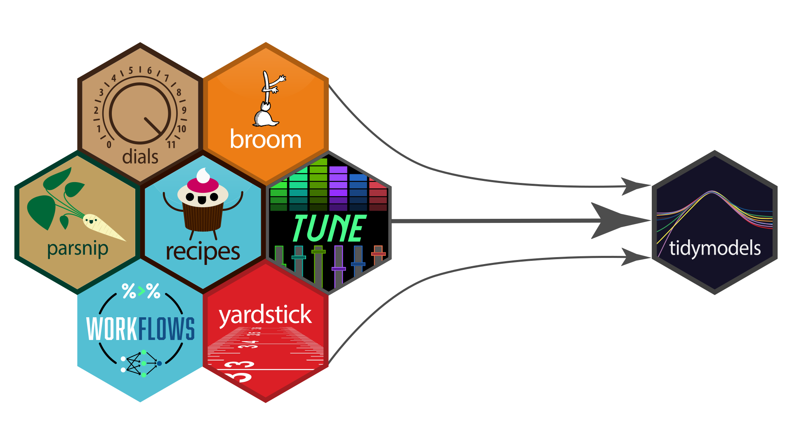
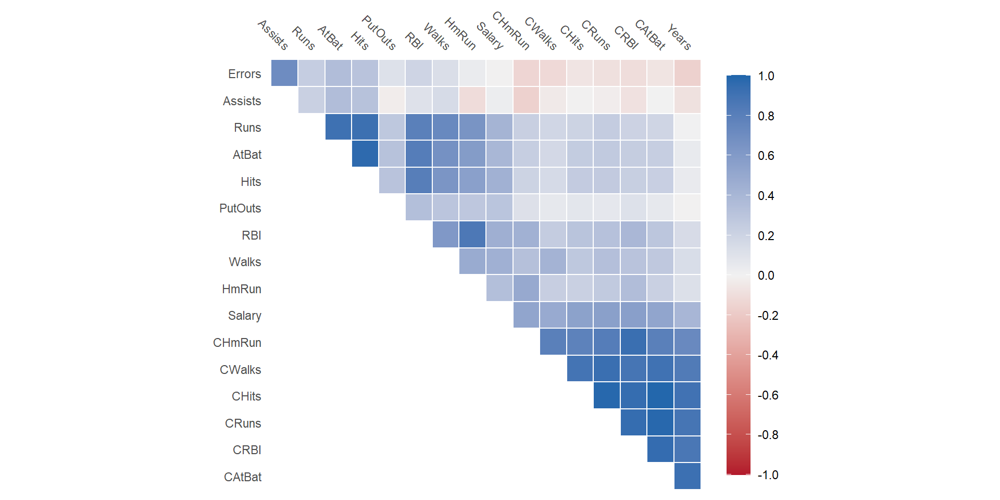

Tidy{verse|models}
A Modern Approach for Data Science and Machine Learning in R
Hallo!


R for Data Science and Machine Learning?
Why don’t we just use Python?


Agenda
- Preliminaries
- Tidyverse
{dplyr}{ggplot2}{lubridate}
- Tidymodels
- Modelling Workflow
- Tuning Models (Regression)
- Tuning Models (Classification)
Goals of this Workshop
- Familiarize yourself with the
{tidy}ecosystem - Pique your curiosity about what else the
{tidy}ecosystem has to offer - Equip you with tools that can be used in your day-to-day work
Resources for this Tutorial
Access the slides at
Or, clone the repo:
Resources beyond this Tutorial
Tidy Modelling with R by Max Kuhn and Julia Silge
R for Data Science (R4DS) by Hadley Wickham, Mine Çetinkaya-Rundel, and Garrett Grolemund.
Statistical Inference via Data Science: A Modern Dive into R and the Tidyverse by Chester Ismay and Albert Y. Kim.
Data Science Box by Mine Çetinkaya-Rundel
Quarto
What is Quarto?
An open-source scientific and technical publishing system for R, Python, Julia, and Observable
Why should I use it?
Publish reproducible, production quality articles, presentations, dashboards, websites, blogs, and books in HTML, PDF, MS Word, ePub, and more.
How can I use it?
Quarto is bundled with newer versions of RStudio and Positron. VS Code also provides an extension.
For further information, see Official Quarto Website
Quickstart for Quarto

Working with Quarto
We can then
- Write code snippets
- Insert content (images, videos, and even raw HTML!)
- Export documents as different formats (PDF,HTML, and DOCX)
Required Packages
# Core meta-packages (these will install many dependencies)
core_packages <- c("tidyverse", "tidymodels")
# Additional packages not included in tidyverse/tidymodels
extra_packages <- c(
"glue", "patchwork", "ggtext", "themis", "xgboost",
"ranger", "glmnet", "ISLR2", "nycflights13"
)
# Combine all required packages
required_packages <- c(core_packages, extra_packages)
# Install missing packages
for (pkg in required_packages) {
if (!requireNamespace(pkg, quietly = TRUE)) {
message(paste("Installing", pkg, "..."))
install.packages(pkg)
} else {
message(paste(pkg, "is already installed."))
}
}{tidyverse}

As a meta-package, the {tidyverse} contains many different packages.
Using the Tidyverse in R
Most importantly:
── Attaching core tidyverse packages ──────────────────────── tidyverse 2.0.0 ──
✔ dplyr 1.1.4 ✔ readr 2.1.5
✔ forcats 1.0.0 ✔ stringr 1.5.1
✔ ggplot2 3.5.2 ✔ tibble 3.3.0
✔ lubridate 1.9.4 ✔ tidyr 1.3.1
✔ purrr 1.1.0
── Conflicts ────────────────────────────────────────── tidyverse_conflicts() ──
✖ dplyr::filter() masks stats::filter()
✖ dplyr::lag() masks stats::lag()
ℹ Use the conflicted package (<http://conflicted.r-lib.org/>) to force all conflicts to become errorsThe Penguins Dataset (Tabular Data)
Includes measurements for penguin species, island in Palmer Archipelago, size (flipper length, body mass, bill dimensions), and sex.

The {dplyr}-Package - Cheatsheet

Getting a glimpse of the Data
Base R
# A tibble: 4 × 8
species island bill_length_mm bill_depth_mm flipper_length_mm body_mass_g
<fct> <fct> <dbl> <dbl> <int> <int>
1 Adelie Torgersen 39.1 18.7 181 3750
2 Adelie Torgersen 39.5 17.4 186 3800
3 Adelie Torgersen 40.3 18 195 3250
4 Adelie Torgersen NA NA NA NA
# ℹ 2 more variables: sex <fct>, year <int>
🌟{tidyverse}🌟
Rows: 344
Columns: 8
$ species <fct> Adelie, Adelie, Adelie, Adelie, Adelie, Adelie, Adel…
$ island <fct> Torgersen, Torgersen, Torgersen, Torgersen, Torgerse…
$ bill_length_mm <dbl> 39.1, 39.5, 40.3, NA, 36.7, 39.3, 38.9, 39.2, 34.1, …
$ bill_depth_mm <dbl> 18.7, 17.4, 18.0, NA, 19.3, 20.6, 17.8, 19.6, 18.1, …
$ flipper_length_mm <int> 181, 186, 195, NA, 193, 190, 181, 195, 193, 190, 186…
$ body_mass_g <int> 3750, 3800, 3250, NA, 3450, 3650, 3625, 4675, 3475, …
$ sex <fct> male, female, female, NA, female, male, female, male…
$ year <int> 2007, 2007, 2007, 2007, 2007, 2007, 2007, 2007, 2007…Easy Grouping and Summaries
What is the average male and female body mass of each species on each island?
Base R
avg_mass <- aggregate(
body_mass_g ~ sex+species+island,
data = data_penguin,
FUN = function(x) mean(x, na.rm = TRUE)
)
names(avg_mass)[
names(avg_mass) == "body_mass_g"
] <- "mean_weight"
print(avg_mass) sex species island mean_weight
1 female Adelie Biscoe 3369.318
2 male Adelie Biscoe 4050.000
3 female Gentoo Biscoe 4679.741
4 male Gentoo Biscoe 5484.836
5 female Adelie Dream 3344.444
6 male Adelie Dream 4045.536
7 female Chinstrap Dream 3527.206
8 male Chinstrap Dream 3938.971
9 female Adelie Torgersen 3395.833
10 male Adelie Torgersen 4034.783
🌟{tidyverse}🌟
data_penguin |>
na.omit() |>
dplyr::group_by(sex,species,island) |>
dplyr::summarise(
mean_weight = mean(body_mass_g)
)# A tibble: 10 × 4
# Groups: sex, species [6]
sex species island mean_weight
<fct> <fct> <fct> <dbl>
1 female Adelie Biscoe 3369.
2 female Adelie Dream 3344.
3 female Adelie Torgersen 3396.
4 female Chinstrap Dream 3527.
5 female Gentoo Biscoe 4680.
6 male Adelie Biscoe 4050
7 male Adelie Dream 4046.
8 male Adelie Torgersen 4035.
9 male Chinstrap Dream 3939.
10 male Gentoo Biscoe 5485.|> or %>%?
Both pass LHS as the first argument to RHS
Base R Pipe |>
- Introduced in R >= 4.1
- Does not support placeholders (always first argument)
{magrittr} Pipe %>%
- Comes from the
{magrittr}-library (included in{tidyverse}) - Allows placeholder
.for flexible positioning - Supports custom operators (
%<>%,%$%)
Exercise: Grouping, Filtering, and Summaries
Exercise 1
Use the dplyr::filter()- and dplyr::n()-functions to find out how many penguins on each island have a body mass higher than 3500g.
Bonus: Also include the relative number with respect to the total number of penguins by using the mutate-function.
05:00
{ggplot2}


{ggplot2}



The {ggplot2}-Package - Cheatsheet

{ggplot2}-Basics
{ggplot2}-Basics
{ggplot2}-Basics

{ggplot2}-Basics

{ggplot2}-Basics
{ggplot2}-Basics
{ggplot2}-Basics
Exercise: {ggplot2}
Exercise 2
Using the geom_histogram()-function, create a histogram for the variable flipper_length.
Bonus: Use the after_stat()- and sum()-functions in combination with the count argument to display the relative frequencies of the flipper lengths. Then, set the y-scale to percentages with the scale_y_continuous()- and scales::percent()-function and change the y-axis label to "relative frequency" with the help of the labs()-function.
05:00
{ggplot2}: Extensions
{ggtext}: Markdown and HTML rendering for ggplot2{patchwork}: Makes it ridiculously simple to combine separate ggplots into the same graphic.{ggmap}: Makes it easy to retrieve raster map tiles from popular online mapping services like Google Maps, Stadia Maps, and OpenStreetMap
{ggplot2}: Further Resources


NYC Flight Data
Rows: 336,776
Columns: 19
$ year <int> 2013, 2013, 2013, 2013, 2013, 2013, 2013, 2013, 2013, 2…
$ month <int> 1, 1, 1, 1, 1, 1, 1, 1, 1, 1, 1, 1, 1, 1, 1, 1, 1, 1, 1…
$ day <int> 1, 1, 1, 1, 1, 1, 1, 1, 1, 1, 1, 1, 1, 1, 1, 1, 1, 1, 1…
$ dep_time <int> 517, 533, 542, 544, 554, 554, 555, 557, 557, 558, 558, …
$ sched_dep_time <int> 515, 529, 540, 545, 600, 558, 600, 600, 600, 600, 600, …
$ dep_delay <dbl> 2, 4, 2, -1, -6, -4, -5, -3, -3, -2, -2, -2, -2, -2, -1…
$ arr_time <int> 830, 850, 923, 1004, 812, 740, 913, 709, 838, 753, 849,…
$ sched_arr_time <int> 819, 830, 850, 1022, 837, 728, 854, 723, 846, 745, 851,…
$ arr_delay <dbl> 11, 20, 33, -18, -25, 12, 19, -14, -8, 8, -2, -3, 7, -1…
$ carrier <chr> "UA", "UA", "AA", "B6", "DL", "UA", "B6", "EV", "B6", "…
$ flight <int> 1545, 1714, 1141, 725, 461, 1696, 507, 5708, 79, 301, 4…
$ tailnum <chr> "N14228", "N24211", "N619AA", "N804JB", "N668DN", "N394…
$ origin <chr> "EWR", "LGA", "JFK", "JFK", "LGA", "EWR", "EWR", "LGA",…
$ dest <chr> "IAH", "IAH", "MIA", "BQN", "ATL", "ORD", "FLL", "IAD",…
$ air_time <dbl> 227, 227, 160, 183, 116, 150, 158, 53, 140, 138, 149, 1…
$ distance <dbl> 1400, 1416, 1089, 1576, 762, 719, 1065, 229, 944, 733, …
$ hour <dbl> 5, 5, 5, 5, 6, 5, 6, 6, 6, 6, 6, 6, 6, 6, 6, 5, 6, 6, 6…
$ minute <dbl> 15, 29, 40, 45, 0, 58, 0, 0, 0, 0, 0, 0, 0, 0, 0, 59, 0…
$ time_hour <dttm> 2013-01-01 05:00:00, 2013-01-01 05:00:00, 2013-01-01 0…NYC Flight Data - Quick EDA Example
How much missing data are we dealing with?
flight_data |>
summarise(
across(
.cols = everything(),
.fns = ~sum(is.na(.)))
) |>
pivot_longer(cols = everything(),
names_to = "column",
values_to = "na_count") |>
filter(na_count>0) |>
mutate(na_percent = (na_count / nrow(flight_data)) * 100)# A tibble: 6 × 3
column na_count na_percent
<chr> <int> <dbl>
1 dep_time 8255 2.45
2 dep_delay 8255 2.45
3 arr_time 8713 2.59
4 arr_delay 9430 2.80
5 tailnum 2512 0.746
6 air_time 9430 2.80 This can be done easier, right?
NYC Flight Data - Quick EDA Example
year month day dep_time sched_dep_time
0 0 0 8255 0
dep_delay arr_time sched_arr_time arr_delay carrier
8255 8713 0 9430 0
flight tailnum origin dest air_time
0 2512 0 0 9430
distance hour minute time_hour
0 0 0 0 Problem: The return value is a vector and not a Tibble.
Question: What is a possible and plausible cause for the NA values?
{lubridate}: Make Dealing with Dates a Little Easier


Lubridate: Creating Columns in the POSIX Dateformat
# A tibble: 5 × 3
dep_dt sched_dep_dt arr_time_dt
<dttm> <dttm> <dttm>
1 2013-01-01 05:17:00 2013-01-01 05:15:00 2013-01-01 08:30:00
2 2013-01-01 05:33:00 2013-01-01 05:29:00 2013-01-01 08:50:00
3 2013-01-01 05:42:00 2013-01-01 05:40:00 2013-01-01 09:23:00
4 2013-01-01 05:44:00 2013-01-01 05:45:00 2013-01-01 10:04:00
5 2013-01-01 05:54:00 2013-01-01 06:00:00 2013-01-01 08:12:00Calculating the Net Air Time
Let’s calculate the airtime using the new dep_dt and arr_time_dt columns and compare it to the air_time column provided in the dataset:
flight_time |>
mutate(
net_air_time = as.duration(arr_time_dt - sched_dep_dt),
air_time = minutes(air_time) |> as.duration()
) |>
select(net_air_time,air_time) |>
head(5)# A tibble: 5 × 2
net_air_time air_time
<Duration> <Duration>
1 11700s (~3.25 hours) 13620s (~3.78 hours)
2 12060s (~3.35 hours) 13620s (~3.78 hours)
3 13380s (~3.72 hours) 9600s (~2.67 hours)
4 15540s (~4.32 hours) 10980s (~3.05 hours)
5 7920s (~2.2 hours) 6960s (~1.93 hours) Are Time Zones an Issue?!
flights_tz <- flight_time |>
filter(!is.na(dep_time), !is.na(arr_time)) |>
left_join(airports |> select(faa, tz = tzone),
by = c("origin" = "faa")
) |>
rename(origin_tz = tz) |>
left_join(airports |> select(faa, tz = tzone),
by = c("dest" = "faa")) |>
rename(dest_tz = tz) |>
filter(!is.na(origin_tz), !is.na(dest_tz)) |>
mutate(
dep_time_local = force_tz(sched_dep_dt, tzone = origin_tz),
arr_time_local = force_tz(arr_time_dt, tzone = dest_tz)
) |>
mutate(
net_air_time = as.duration(arr_time_local - dep_time_local),
air_time = minutes(air_time) |> as.duration()
) |>
select(net_air_time, air_time)Are Time Zones an Issue?!
Possible Issues
- No taxi times are included
- No wheel data is included (i.e. timestamps for the exact takeoff and landing)
Exercise: Weekday Conversion
Exercise 3
- Using the
flight_timedataset, create a new featureweekdaywhich contains the weekday of the flights. To create this new feature, you can use thelubridate::wday()-function. - The default parameters of the
lubridate::weekday()-function return integer values instead of ordered factors. Use thehelpfunction to find out how to set the arguments that weekdays in the"en_US.UTF-8"format are returned. - Find out which weekday has the highest average departure delay.
07:00
{tidymodels}
As a meta-package, the {tidymodels}-library also contains many different packages.
The Hitters Dataset
Rows: 322
Columns: 20
$ AtBat <int> 293, 315, 479, 496, 321, 594, 185, 298, 323, 401, 574, 202, …
$ Hits <int> 66, 81, 130, 141, 87, 169, 37, 73, 81, 92, 159, 53, 113, 60,…
$ HmRun <int> 1, 7, 18, 20, 10, 4, 1, 0, 6, 17, 21, 4, 13, 0, 7, 3, 20, 2,…
$ Runs <int> 30, 24, 66, 65, 39, 74, 23, 24, 26, 49, 107, 31, 48, 30, 29,…
$ RBI <int> 29, 38, 72, 78, 42, 51, 8, 24, 32, 66, 75, 26, 61, 11, 27, 1…
$ Walks <int> 14, 39, 76, 37, 30, 35, 21, 7, 8, 65, 59, 27, 47, 22, 30, 11…
$ Years <int> 1, 14, 3, 11, 2, 11, 2, 3, 2, 13, 10, 9, 4, 6, 13, 3, 15, 5,…
$ CAtBat <int> 293, 3449, 1624, 5628, 396, 4408, 214, 509, 341, 5206, 4631,…
$ CHits <int> 66, 835, 457, 1575, 101, 1133, 42, 108, 86, 1332, 1300, 467,…
$ CHmRun <int> 1, 69, 63, 225, 12, 19, 1, 0, 6, 253, 90, 15, 41, 4, 36, 3, …
$ CRuns <int> 30, 321, 224, 828, 48, 501, 30, 41, 32, 784, 702, 192, 205, …
$ CRBI <int> 29, 414, 266, 838, 46, 336, 9, 37, 34, 890, 504, 186, 204, 1…
$ CWalks <int> 14, 375, 263, 354, 33, 194, 24, 12, 8, 866, 488, 161, 203, 2…
$ League <fct> A, N, A, N, N, A, N, A, N, A, A, N, N, A, N, A, N, A, A, N, …
$ Division <fct> E, W, W, E, E, W, E, W, W, E, E, W, E, E, E, W, W, W, W, W, …
$ PutOuts <int> 446, 632, 880, 200, 805, 282, 76, 121, 143, 0, 238, 304, 211…
$ Assists <int> 33, 43, 82, 11, 40, 421, 127, 283, 290, 0, 445, 45, 11, 151,…
$ Errors <int> 20, 10, 14, 3, 4, 25, 7, 9, 19, 0, 22, 11, 7, 6, 8, 0, 10, 1…
$ Salary <dbl> NA, 475.000, 480.000, 500.000, 91.500, 750.000, 70.000, 100.…
$ NewLeague <fct> A, N, A, N, N, A, A, A, N, A, A, N, N, A, N, A, N, A, A, N, …The Hitters Dataset
| Column | Description |
|---|---|
| AtBat | Number of times at bat in 1986 |
| Hits | Number of hits in 1986 |
| HmRun | Number of home runs in 1986 |
| Runs | Number of runs in 1986 |
| RBI | Number of runs batted in in 1986 |
| League | A factor with levels A and N indicating player’s league at the end of 1986 |
| Division | A factor with levels E and W indicating player’s division at the end of 1986 |
| PutOuts | Number of put outs in 1986 |
| Errors | Number of errors in 1986 |
| Salary | 1987 annual salary on opening day in thousands of dollars |
| NewLeague | A factor with levels A and N indicating player’s league at the beginning of 1987 |
Quick EDA
Quick EDA: Exercise
Exercise 4
Write a script that returns the absolute and relative number of missing entries of each feature. Only return those where there is at least one missing entry.
# A tibble: 1 × 3
column na_count na_percent
<chr> <int> <dbl>
1 Salary 59 18.3\(\implies\) Simply dropping NA rows would remove ~\(18\%\) of the dataset.
05:00
{recipes}, {workflows}, and {parsnip}

The goal of parsnip is to provide a tidy, unified interface to models that can be used to try a range of models […].
A workflow is an object that can bundle together your pre-processing, modeling, and post-processing requests.
With recipes, you can use dplyr-like pipeable sequences of feature engineering steps to get your data ready for modeling.
Modelling Workflow with {tidymodels}
Generating a data split with {rsample}:
Defining a recipe with {recipes}:
Bundle together the preprocessing steps and model specification:
══ Workflow ════════════════════════════════════════════════════════════════════
Preprocessor: Recipe
Model: linear_reg()
── Preprocessor ────────────────────────────────────────────────────────────────
2 Recipe Steps
• step_impute_knn()
• step_dummy()
── Model ───────────────────────────────────────────────────────────────────────
Linear Regression Model Specification (regression)
Computational engine: lm Fitting and Evaluating a Model
Exercise: Using a Different Model
Exercise 5
- Use the
rand_forest()-function with argumentmode="regression"to define a random forest model. - Replace the current model specification in the workflow with the help of the
update_model()-function. - Fit the newly specified workflow on the training data and evaluate it on the testing data.
07:00
Problem
rbind(
rf_metrics |> mutate(model="Random Forest"),
lm_metrics |> mutate(model="Linear Model")
) |>
arrange(.metric)# A tibble: 6 × 4
.metric .estimator .estimate model
<chr> <chr> <dbl> <chr>
1 mae standard 8.00 Random Forest
2 mae standard 6.27 Linear Model
3 rmse standard 10.5 Random Forest
4 rmse standard 8.09 Linear Model
5 rsq standard 0.944 Random Forest
6 rsq standard 0.964 Linear Model The default hyper parameters of the random forest model yield worse metrics than than the linear model. We should, therefore, tune the parameters to achieve a better out of sample performance.
{tune}

Creating a Cross-Validation Object and Tune Specification
Using the {rsample}-library, we can create a 5-fold CV object:
By setting the hyperparameters to tune(), we prepare the model for tuning.
Tuning a Model
Training a Final Model
Going Beyond Regular Grids
Instead of using a regular grid, we can also use space filling curves
Before preparing the parameters:
Collection of 3 parameters for tuning
identifier type object
mtry mtry nparam[?]
trees trees nparam[+]
min_n min_n nparam[+]
Model parameters needing finalization:
# Randomly Selected Predictors ('mtry')
See dials::finalize or dials::update.parameters for more
information.Using Space Filling Curves
Comparing the tuned results to the untuned results:
# A tibble: 6 × 4
.metric .estimator .estimate tuned
<chr> <chr> <dbl> <lgl>
1 rsq standard 0.944 FALSE
2 rsq standard 0.951 TRUE
3 rmse standard 10.5 FALSE
4 rmse standard 9.61 TRUE
5 mae standard 8.00 FALSE
6 mae standard 7.33 TRUE Exercise: XGBoost
Exercise 6 Instead of tuning a random forest or linear model, tune an XGBoost model. The {parsnip} interface is given by the boost_tree()-function. Parameters that can be tuned are:
mtrytrees,min_n,tree_depth,learn_rate
To tune the model, generate a grid using the grid_space_filling()-function
10:00
Classification Tasks with {tidymodels}
Rows: 26,115
Columns: 15
$ origin <chr> "EWR", "EWR", "EWR", "EWR", "EWR", "EWR", "EWR", "EWR", "EW…
$ year <int> 2013, 2013, 2013, 2013, 2013, 2013, 2013, 2013, 2013, 2013,…
$ month <int> 1, 1, 1, 1, 1, 1, 1, 1, 1, 1, 1, 1, 1, 1, 1, 1, 1, 1, 1, 1,…
$ day <int> 1, 1, 1, 1, 1, 1, 1, 1, 1, 1, 1, 1, 1, 1, 1, 1, 1, 1, 1, 1,…
$ hour <int> 1, 2, 3, 4, 5, 6, 7, 8, 9, 10, 11, 13, 14, 15, 16, 17, 18, …
$ temp <dbl> 39.02, 39.02, 39.02, 39.92, 39.02, 37.94, 39.02, 39.92, 39.…
$ dewp <dbl> 26.06, 26.96, 28.04, 28.04, 28.04, 28.04, 28.04, 28.04, 28.…
$ humid <dbl> 59.37, 61.63, 64.43, 62.21, 64.43, 67.21, 64.43, 62.21, 62.…
$ wind_dir <dbl> 270, 250, 240, 250, 260, 240, 240, 250, 260, 260, 260, 330,…
$ wind_speed <dbl> 10.35702, 8.05546, 11.50780, 12.65858, 12.65858, 11.50780, …
$ wind_gust <dbl> NA, NA, NA, NA, NA, NA, NA, NA, NA, NA, NA, NA, NA, NA, 20.…
$ precip <dbl> 0, 0, 0, 0, 0, 0, 0, 0, 0, 0, 0, 0, 0, 0, 0, 0, 0, 0, 0, 0,…
$ pressure <dbl> 1012.0, 1012.3, 1012.5, 1012.2, 1011.9, 1012.4, 1012.2, 101…
$ visib <dbl> 10, 10, 10, 10, 10, 10, 10, 10, 10, 10, 10, 10, 10, 10, 10,…
$ time_hour <dttm> 2013-01-01 01:00:00, 2013-01-01 02:00:00, 2013-01-01 03:00…Data Split and Sample Size Reduction
There are currently 336,776 samples in the data set
Imbalance Check and Recipe
There are probably not too many flights with 30+ minutes delay?!
Sanity Check
rf_spec <- rand_forest(
mode = "classification",
trees = tune(),
mtry = tune(),
min_n = tune()
)
param_set <- extract_parameter_set_dials(
rf_spec
) |>
finalize(data_train_flights |>
select(-is_delayed)
)
wf_flights <- workflow() |>
add_model(rf_spec) |>
add_recipe(rec_flights)
flights_metrics <- metric_set(
accuracy, roc_auc,
sensitivity, specificity
)Tuning the Model
tune_spec <- grid_space_filling(
param_set,
size = 10
)
rf_res_tune <- wf_flights |>
tune_grid(
resamples = folds_flights,
grid = tune_spec,
metrics = flights_metrics
)
parms_opt <- rf_res_tune |>
select_best(metric = "accuracy")
rf_res_gsf <- finalize_workflow(
wf_flights,
parms_opt
) |>
last_fit(
split = split_flights,
metrics = flights_metrics
)Confusion Matrices with {ggplot2}

Generating a Confusion Matrix Tibble
transform_cm <- function(cm){
cm_tib <- as_tibble(cm$table)|>
mutate(
Prediction = factor(
Prediction,
labels = c("Negative", "Postive")
),
Truth = factor(
Truth,
labels = c("Negative", "Postive")
),
Prediction = factor(
Prediction,
levels = rev(levels(Prediction)))
)
return(cm_tib)
}
cm_rf_tib <- transform_cm(cm_rf)
cm_rf_tib# A tibble: 4 × 3
Prediction Truth n
<fct> <fct> <dbl>
1 Negative Negative 599
2 Postive Negative 19
3 Negative Postive 85
4 Postive Postive 17Plotting the Matrix and Defining a Wrapper-Function
Generating Metrics and Text
library(ggtext)
library(patchwork)
library(glue)
cols <- c("#506432")
names(cols) <- c("rf")
title_tib <- tibble(
x=0,
y=1,
label = glue(
"
<p><b>Confusion matrix for a
<span style='color:{cols['rf']};'>random forest</span>
<br/>
</b></p>
<p> - Accuracy = {scales::percent(round(acc,3))} </p>
<p> - Sensitivity = {scales::percent(round(sensi,3))} </p>
<p> - Specificity = {scales::percent(round(speci,3))} </p>
"
)
)Stichting it all Together
Next Steps
- Screening Many Models: Tidy Modelling With R
- Deploying Models with
{vetiver} - Time Series Analysis/Forecasting with
{tidyverts}
Solutions to the Exercises
Solution: {dplyr}
Solution 1 (Exercise 1).
Solution: {ggplot2}
Solution 2 (Exercise 2).
Solution: Lubridate
Solution 3 (Exercise 3).
# A tibble: 7 × 2
weekday mean_delay
<ord> <dbl>
1 Sunday 11.5
2 Monday 14.7
3 Tuesday 10.6
4 Wednesday 11.6
5 Thursday 16.0
6 Friday 14.7
7 Saturday 7.59Solution: EDA Hitters
Solution 4 (Exercise 4).
data_hitters |>
summarise(across(everything(),
~sum(is.na(.)))) |>
pivot_longer(cols = everything(),
names_to = "column",
values_to = "na_count") |>
filter(na_count>0) |>
mutate(na_percent = (na_count / nrow(data_hitters)) * 100)# A tibble: 1 × 3
column na_count na_percent
<chr> <int> <dbl>
1 Salary 59 18.3Solution: Random Forest
Solution 5 (Exercise 5).
rf_spec <- rand_forest(mode = "regression")
wf_hitters <- wf_hitters |>
update_model(rf_spec)
rf_res <- wf_hitters |>
fit(data=data_train_hitters)
rf_metrics <- rf_res |>
augment(data_test_hitters) |>
hitter_metrics(.pred,Hits)
rf_metrics# A tibble: 3 × 3
.metric .estimator .estimate
<chr> <chr> <dbl>
1 rmse standard 10.4
2 mae standard 8.08
3 rsq standard 0.945Solution: XGBoost
Solution 6 (Exercise 6).
xgb_spec <- boost_tree(
mode = "regression",
mtry = tune(),
trees = tune(),
min_n = tune(),
tree_depth = tune(),
learn_rate = tune()
)
param_set <- extract_parameter_set_dials(
xgb_spec
) |>
finalize(data_train_hitters |>
select(-Hits)
)
tune_spec <- grid_space_filling(
param_set,
size = 15
)
wf_hitters <- wf_hitters |>
update_model(xgb_spec)xgb_res_tune <- wf_hitters |>
tune_grid(
resamples = folds_hitters,
grid = tune_spec,
metrics = hitter_metrics
)
parms_opt <- xgb_res_tune |>
select_best(metric = "rmse")
xgb_res <- finalize_workflow(
wf_hitters,
parms_opt
) |>
last_fit(
split = split_hitters,
metrics = hitter_metrics)
(xgb_tune_metrics <- xgb_res |>
collect_metrics() |>
select(-.config))# A tibble: 3 × 3
.metric .estimator .estimate
<chr> <chr> <dbl>
1 rmse standard 9.67
2 mae standard 7.43
3 rsq standard 0.947Linus Lach © 2025